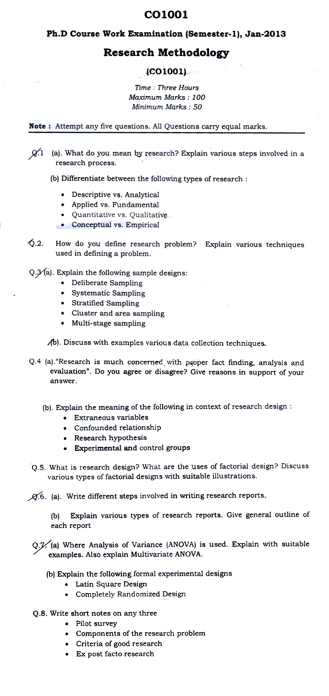

RGPV PHD INFORMATION
PHD ORDINANCE
|
RGPV-PHD-ORDINANCE-11-EF-03-06-2010-AMENDED-NOV-2016
|
RGPV-PHD-ORDINANCE-11-EF-03-06-2010-AMENDED-JUN-2013
|
RGPV-PHD-ORDINANCE-11-EF-2000-2020-AMENDED-NOV-2007
|
ALL BRANCHES SYLLABUS FOR Ph.D ENTRANCE TEST EXAMINATION
RGPV PhD Syllabus and question paper
RESEARCH METHODOLOGY
( Common for all the branches)
RGPV PhD course work syllabus (Research Methodology)
SYLLABUS FOR Pre-Ph.D. COURSEWORK
RESEARCH METHODOLOGY
OBJECTIVE: This course will enable scholars to identify and apply appropriate research methodology in order to plan, conduct and evaluate basic research. The Course will furthermore enable scholars to distinguish between the scientific method and common sense knowledge while laying the foundation for research skills al higher levels.
I. Research:
a) Types, Research process and steps in it, hypothesis, Research proposals and aspects. Research Methodology: Objectives of Research, Motivation in Research, Types of Research, Research Approaches, and Significance of Research. Research Methods Versus Methodology, Research and Scientific Method, Defining the Research Problem: Research Problem, Selecting the Problem, Necessity of Defining the Problem, Technique Involved in Defining a Problem..
b) Research Design: Need, Problem Definition, variables, research design concepts, Literature .survey and review, Research design process, Errors In research. Data Collection and Representation: Primary Data Secondary Data, Data Presentation. Processing and Analysis of Data: Statistics in Research, Measures of Central Tendency,. Measures of Dispersion (variation), Measures of Asymmetry (Skewness), Measures of Relationship, Forecasting, Linear Regression and Time series.
c) Sampling Methods and Distributions: Sampling Methods, Sampling Distribution of mean, Sampling Distributions of Variance. Testing of Hypotheses-I : Basic Concepts Concerning Testing of Hypotheses, Procedure for Hypothesis Testing, Flow Diagram for Hypothesis Testing, Measuring the Power of a Hypothesis Test, Important Parametric Tests, Limitations of the Tests of Hypotheses, Chi-square Test, Non Parametric Tests.
d) Research. Modeling: Types of Models, Model building and stages, Data consideration and testing; Heuristic and Simulation modeling, Simulation: Need for simulation, Types of' Simulation: Simulation languages.
e) Report Writing: Pre writing considerations„ Thesis writing, Formats of report writing, Formats of publications in Research journals. Technique of Interpretation, Precaution in Interpretation, Significance of Report Writing, Different Steps in Writing Report, Layout of the Research Report, Types of Reports, Report Format', Typing Instructions, Oral Presentation.
2. Design of Experiments:
a) Objectives; strategies, Factorial experimental design, Designing engineering experiments, basic principles-replication, randomization, blocking, Guidelines for design of experiments.
b) Single Factor Experiment: Hypothesis testing, Analysis of Variance components (ANOVA) for fixed effect model; Total, treatment and error of squares, Degrees of freedom, Confidence interval; ANOVA for random effects model, Estimation of variance components. Model adequacy checking. c) Two factor Factorial Design, Basic definitions and principles, main effect and interaction, response surface and contour plots, General arrangement for a two-factor factorial design; Models-Effects, means and regression. Hypothesis testing.
Reference books:
1. C.R. Kothari, Research Methodology Methods and Techniques (Second Revised Edition), New Age. International Publication.
2. R.Panneerselvam , Research Methodology, PHI
3. Ranjit Kumar, Research methodology: a step-by-step guide for beginners, SAGE Publication. Ltd.
4. Montgomery, Douglas C;(2007), 5/e, Design and Analysis of Experiments, Wiley India)
5. Montgomery, Douglas C. & Runger; George C. (2007), 3/e, Applied Statistics & Probability for Engineers (Wiley Endia)
6. Krishimswamy, K.N.. Sivakumar, Appa lyer and Mathirattian M. (2006), Management
7. Research Methodology; Integration of Principles, Methods and Techniques ( Pearson Education, New Delhi)
